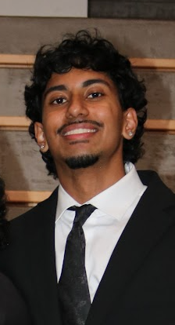
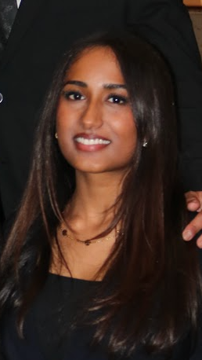
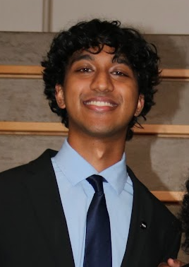
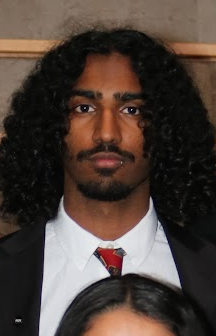
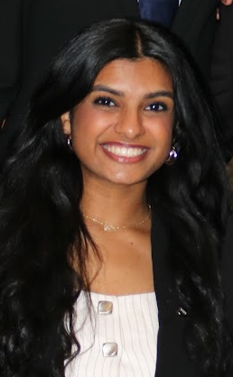

VP Internal
Akhil Kodali
Finance
Hi there! My name is Akhil Kodali, and I’m a senior majoring in Finance at the University of Texas at Dallas. Being part of PGN has been one of the most rewarding parts of my college experience because it gave me a place to grow outside of the classroom. Through PGN, I’ve improved my confidence, communication skills, and ability to connect with others — and built genuine friendships and memories that made UTD feel more like home. Outside of PGN, I enjoy spending time with friends and family, watching sports, listening to music, and trying new things whenever I can.

VP External
Niranjana Arulmanikandar
Finance
Hi everyone! My name is Niranjana Arul, and I’m currently a junior studying business at the University of Texas at Dallas. Joining PGN has given me a strong sense of community and direction early on, and pushed me to step outside my comfort zone and build long-term skills. As Vice President of External Affairs, I’m excited to represent PGN, build connections, and create new opportunities so every member feels supported, confident, and motivated. Outside of PGN, I love staying active — tennis, running — and trying new foods and cuisines.

VP Communications
Matthew Stephen
Healthcare Studies
Hello! My name is Matthew Stephen, and I am a junior at the University of Texas at Dallas majoring in Healthcare Studies on the pre-dental track. PGN has allowed me to grow professionally and personally while connecting me to a support system of like-minded people. As VP Communications, I’m committed to upholding this organization and contributing to a team dedicated to helping each other grow and succeed. Outside of PGN, I love playing tennis with my friends, listening to music, and continuing to develop my path toward dentistry through shadowing and volunteering.

VP Membership
Daniel Abraham
Finance and Psychology
Hello! I’m Daniel Abraham, a senior at the University of Texas at Dallas majoring in Finance and Psychology and minoring in Visual Arts. I’m a founder and Creative Director of 3rdSpace Digital, a creative collective focused on building and showcasing artistic talent in DFW. This past semester, I studied abroad in Paris at NEOMA Business School, gaining insight into the European stock market and sustainability efforts. When I’m not studying or working, I love playing music, painting, writing, and spending time with friends.

VP Finance
Mihira Kada
Supply Chain Management and Business Analytics & AI
Heyyy! My name is Mihira Kada, and I am currently a senior at The University of Texas at Dallas. Over the past two years, PGN has become one of the most meaningful parts of my college experience — giving me professional growth and some of my closest friendships. As VPF, I’m grateful to help elevate our chapter and contribute to its continued growth and impact. Outside of PGN, I enjoy singing, dancing, getting creative, and exploring new things with my friends.
President
Renée Menezes
Psychology and Business Administration